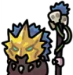

Hell Mode Boss List
In Hell Mode, every 10 waves you will get a random boss. At wave 50 and above, 2 bosses will come out at a time. Each boss has something unique about themselves, either having an active skill they cast to attack your board, or having a special resistance or health bonus. All the different effects are listed below:
Note: Bandit Boss was removed from all modes for now.
- - Corrupt Bandit: Steal 30% money each cast.
-  - Night Shaman: Draws a magic circle on random spaces, and instantly mutates the unit in those spaces into another random unit. The mutation is chosen from the same rarity of the original unit, and this includes units in their untransformed state as well as "Imps" that can only be summoned by Mama's skills. You can avoid the mutation by moving the unit at that time. The timing is strict, but...
- - Coldest: Randomly targets a unit and inflicts the debuff "Reduced Attack Speed" on it. This debuff lasts for 20 waves.
- - Magician: Red warning = cast red circle on 9 random squares, and after a few seconds, a meteor will rain down on the unit in that square and destroy it. Green warning = periodically selfheal and recover its own HP.
- - Reaper: A red circle will be displayed on several random units, and after a few seconds the units on those squares will be destroyed.
- - Doctor: Randomly targets a unit and inflicts the debuff "Blindness" effect (causes attacks to occasionally miss). This debuff lasts for 10 waves.
- - Meat: Periodically selfheal and recover its own HP.
-
 - Barrier: Shield is applied for ~80-90% of the maximum HP.
- Barrier: Shield is applied for ~80-90% of the maximum HP.
- - Grunt: Takes reduced physical damage.
- - Kitty Sorcerer: Takes reduced magical damage.
- - Worm: Randomly targets a unit and inflicts the debuff "Mana recovery reduced". This debuff lasts for 20 waves.
To see the full guide to beating hell mode, click here.
Credit to Eunhaz for creating this list of bosses